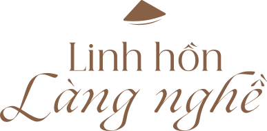
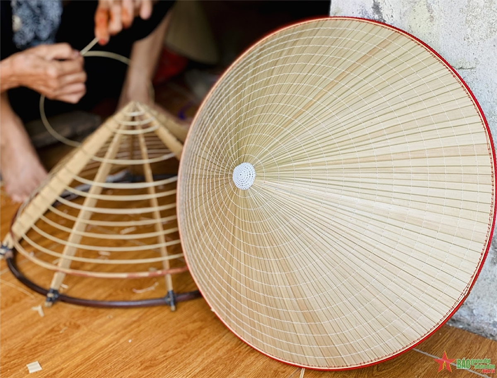
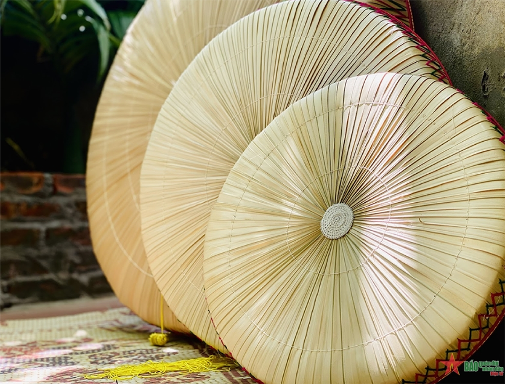
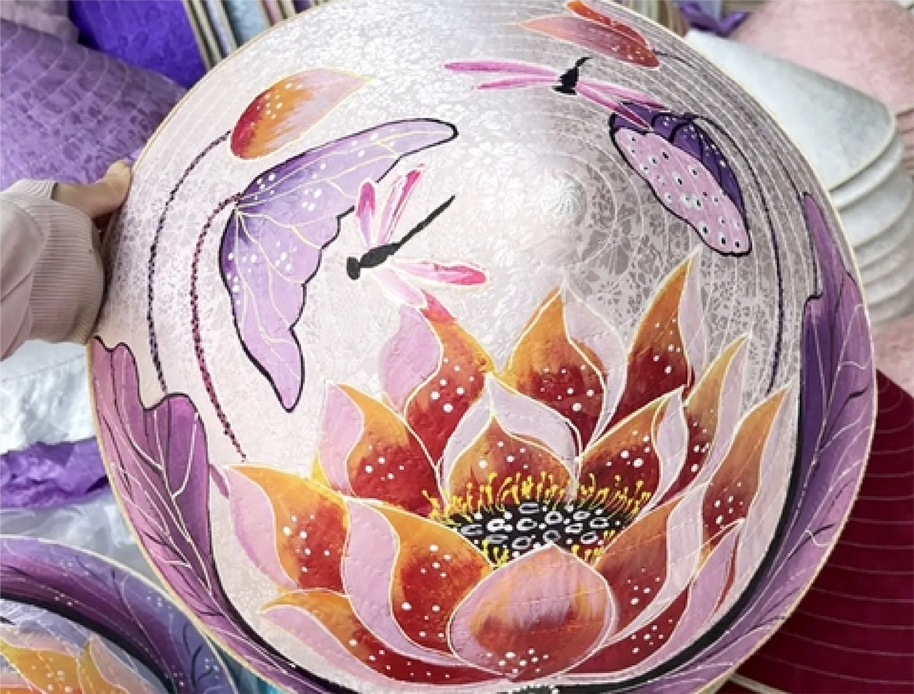
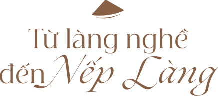
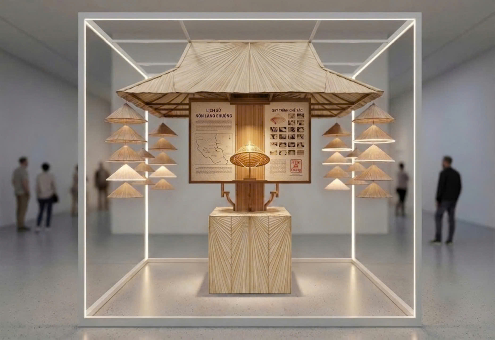
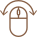
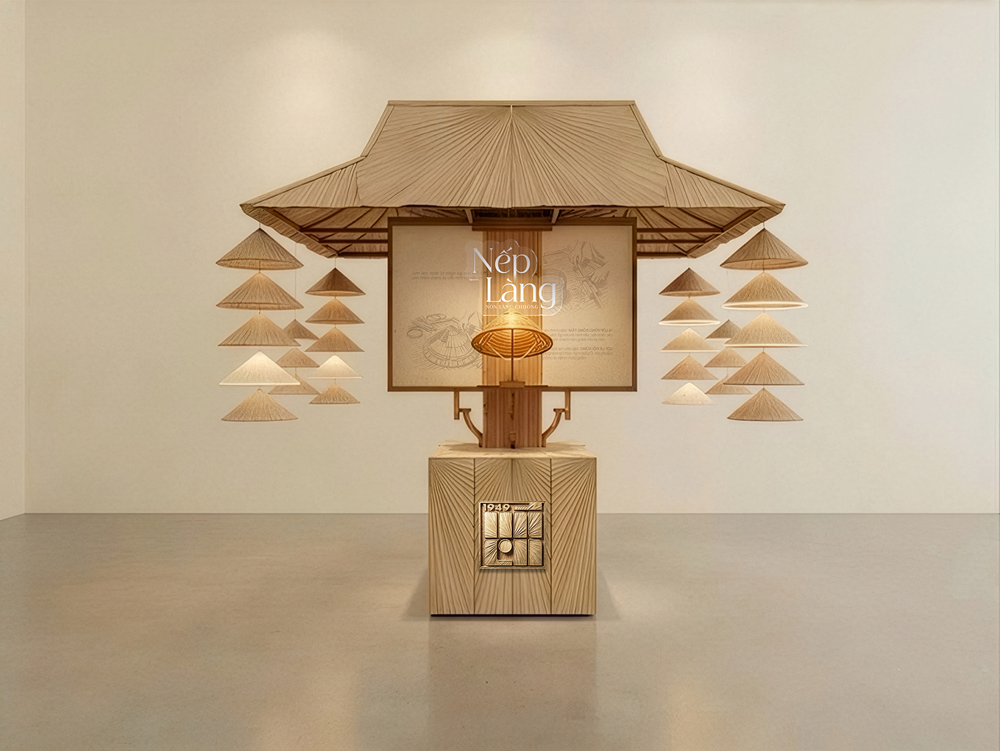

NÓN LÀNG CHUÔNG
KHÔNG GIAN TRIỂN LÃM
& TRƯNG BÀY SẢN PHẨM LÀNG NGHỀ
Làng Chuông (tên chữ là xã Phương Trung, thuộc huyện Thanh Oai, Hà Nội) nằm hiền hòa bên dòng sông Đáy. Không chỉ là một ngôi làng cổ mang đậm nét kiến trúc đồng bằng Bắc Bộ, nơi đây còn được mệnh danh là "thủ phủ nón lá" của Việt Nam.
Lịch sử của Làng Chuông là một dòng chảy xuyên suốt hơn một thiên niên kỷ, nơi sự biến thiên của thời cuộc luôn gắn liền với sự thăng trầm của nghề đan nón truyền thống.
Hình thành làng và khởi nghề nón
Năm 791 (Thế kỷ VIII)Làng được lập với tên gọi ban đầu là Trang Thời Trung. Theo các bậc cao niên, nghề làm nón bắt đầu xuất hiện từ đây. Xưa kia, làng chuyên chế tác nón cổ để cống tiến hoàng tộc.
Đổi tên thành Phương Trung
Năm 1848Vào năm Tự Đức nguyên niên, vì kiêng tên húy của vua Tự Đức, triều đình đổi tên xã Thi Trung thành Phương Trung. Dân gian vẫn gọi là "Làng Chuông".
Chuyển mình sang nón lá chóp
Khoảng năm 1940Để thích ứng với thị hiếu mới, làng cải tiến và chuyển hẳn sang sản xuất loại nón lá hình chóp (với 16 vành tre chuẩn mực). Đây chính là phom dáng chiếc nón lá thanh thoát hiện tại.
Quy hoạch lại cấu trúc hành chính
1947 - 2003Năm 1947, quy hoạch gộp lại thành 7 thôn lớn. Tới năm 2003, thôn Tân Dân tách đôi, định hình quy mô Làng Chuông với 8 thôn như ngày nay.
Phát triển không gian sáng tạo
Năm 2024Làng Chuông khánh thành Trung tâm Thiết kế sáng tạo OCOP. Đưa không gian nghề nón trở thành một điểm đến trải nghiệm văn hóa bài bản.

"Muốn ăn cơm trắng, cá trê
Muốn đội nón lá thì về làng Chuông"
Làng Chuông là ngôi làng cổ với lịch sử hơn vài thế kỷ gìn giữ nghề làm nón. Nón lá Làng Chuông không chỉ là vật dụng che mưa nắng, mà đã trở thành một biểu tượng di sản nghệ thuật.
Chợ phiên Làng Chuông: Diễn ra vào các ngày mùng 4, 10, 14, 20, 24 và 30 âm lịch. Đây là nơi giao thương và là một "triển lãm sống" ngoài trời, nguồn cảm hứng trực tiếp cho hệ thống nón treo thả phân tầng của không gian trưng bày.
Sơ chế & làm phẳng lá nón
Chọn lá: Sử dụng lá lụi hoặc lá non trắng xanh.
Là lá: Hơ trên bếp than củi cho mềm, dùng gang nóng miết lá thật phẳng.
Làm khung & chuốt vành
Chuốt vành: Tre nứa chẻ nhỏ, chuốt nhẵn thành 16 vòng.
Dựng khung: Xếp lên khuôn gỗ, khoảng cách các vành hoàn toàn đều nhau.
Lợp lá & khâu nón
Lợp lá: Xếp 2 lớp lá, lót thêm mo tre tạo độ cứng.
Khâu nón: Dùng sợi cước khâu cố định lá vào vành tre, giấu mũi chỉ.
Cắt cạp, nức vành & hoàn thiện
Nức vành: Cắt bỏ lá thừa viền quanh vành cái để không bung.
Hoàn thiện: Luồn chỉ màu, quét dầu bóng giúp chống mốc.

Nón Lá Ba Lớp: Phom chóp nhọn góc 90 độ, nhẹ, thanh thoát, màu trắng lụa, dùng cho sinh hoạt và nghệ thuật.

Nón Quai Thao: Chiếc đĩa lớn phẳng, đường kính từ 50-60cm, thành nón cao khoảng 10cm. Ở giữa gắn lòng khuyên bằng mây đan để đội đầu.

Nón Thêu Phong Cảnh: Sản phẩm mỹ nghệ. Thợ thêu bông hoa sen, chim muông hoặc vẽ thủy mặc phong cảnh quê hương lên lá.

Nón Lâm Xung: Loại nón đỉnh phẳng hoặc khum nhẹ, dáng dốc theo phong cách cổ trang, thường xuất khẩu làm đèn trang trí.

Hành trình đưa chiếc nón lá từ một vật dụng đời thường bước vào không gian nghệ thuật đương đại, khẳng định giá trị bền vững khi di sản được tiếp sức bằng tư duy thiết kế mới.

Tên gọi "Nếp Làng" mang tầng nghĩa kép: vừa là "nếp sống", "nếp nghĩ" mộc mạc, quy củ của làng nghề truyền thống; vừa là những đường "gấp nếp" hình học đặc trưng trên những thớ lá nón.
"Nếp Làng" là sự tái hiện cấu trúc không gian thân thuộc của làng quê Việt Nam: Mái đình và Cổng làng cổ. Không gian triển lãm đóng vai trò như một chương hồi kiến trúc.


Bề mặt của hệ mái không bao che kín mà được tạo thành từ các màng lá lụi tước nhỏ kết hợp vải xuyên sáng, thả buông rủ nhẹ nhàng. Dưới vòm mái, hệ thống nón lá được thả phân tầng. Khi bước qua "cổng làng", người xem trải nghiệm nhịp điệu nhấp nhô của những thớ lá lụi.


Cốt lõi cấu trúc cổng làng là khối hộp thông tin bốn mặt mang tính tương tác thị giác cao:
- Ba mặt đóng: Lưu trữ nội dung Lịch sử nón Làng Chuông. Ánh đèn làm nổi bật thớ sợi tự nhiên mộc mạc, khuếch tán ánh sáng vàng dịu.
- Một mặt mở hoàn toàn: Xóa ranh giới bao che, nhìn trực diện vào báu vật di sản được bảo bọc bên trong.
XOAY / LƯỚT ẢNH ĐỂ XEM CÁC MẶT
CỦA KHÔNG GIAN TRƯNG BÀY

